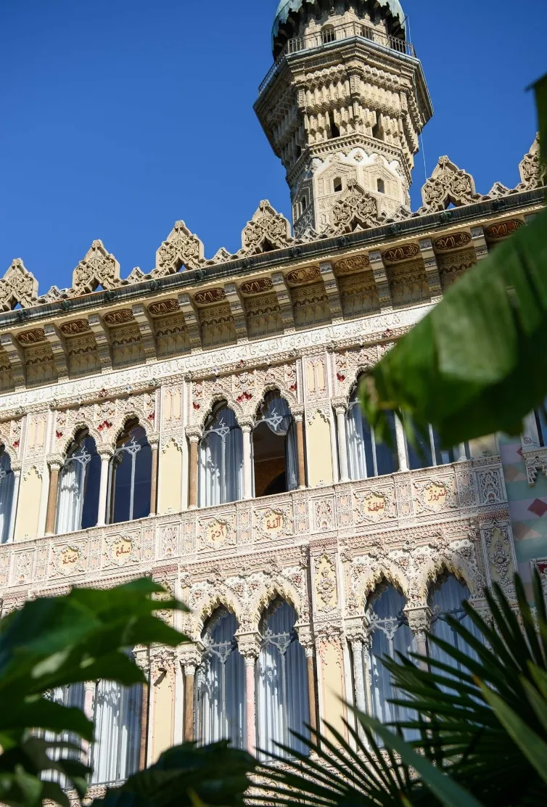
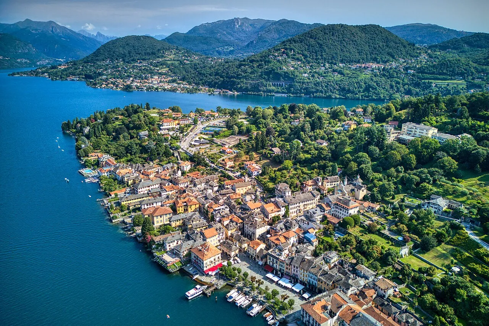
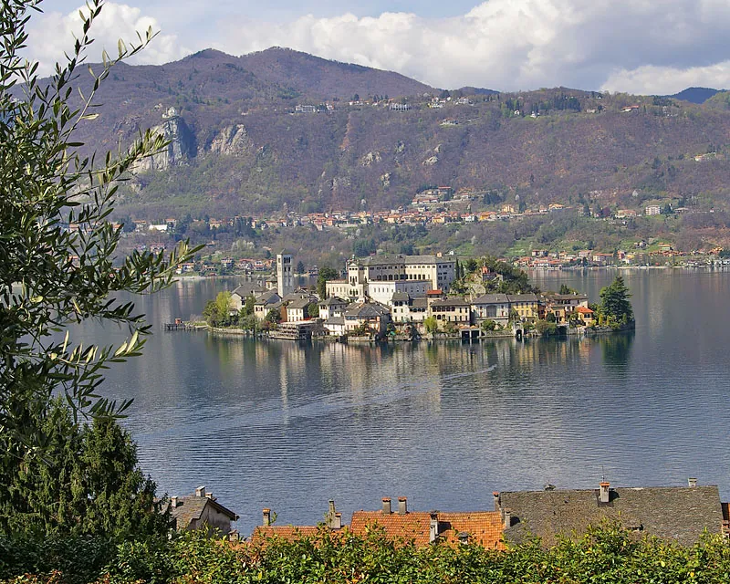
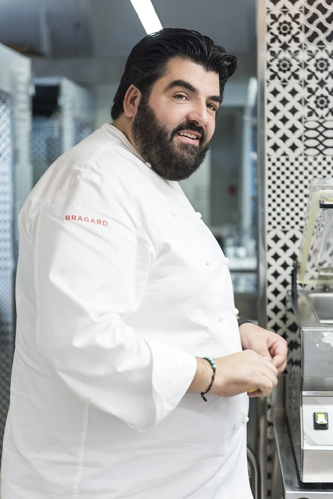
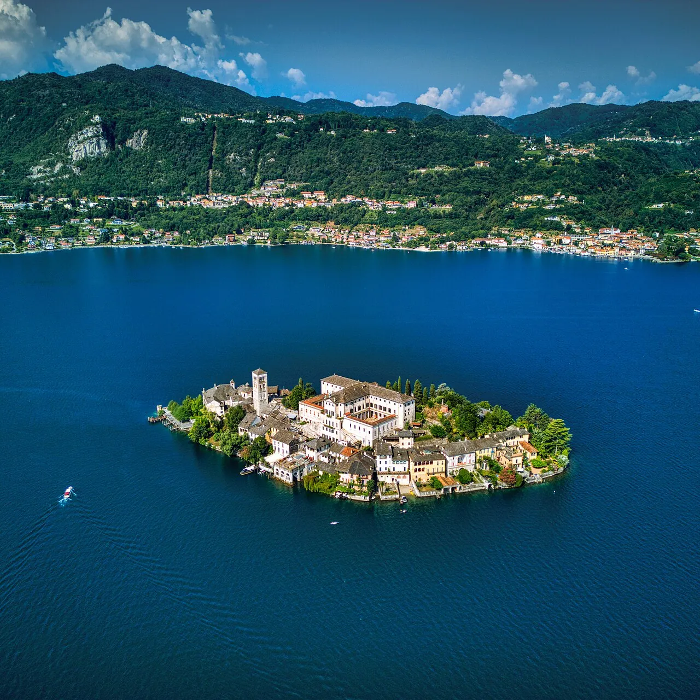
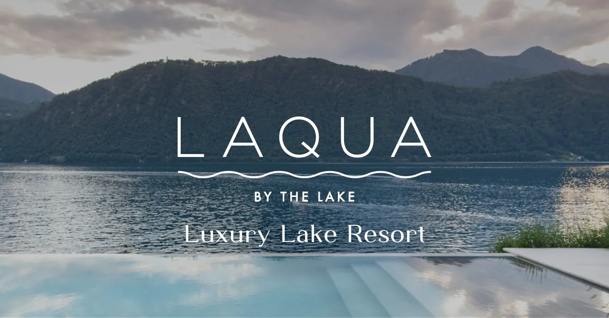
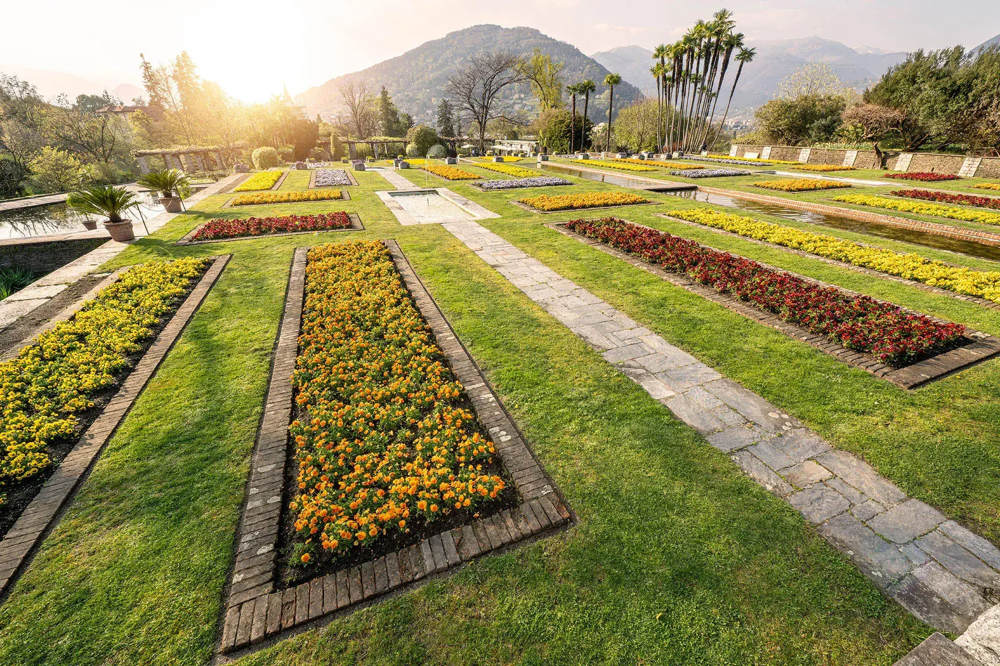
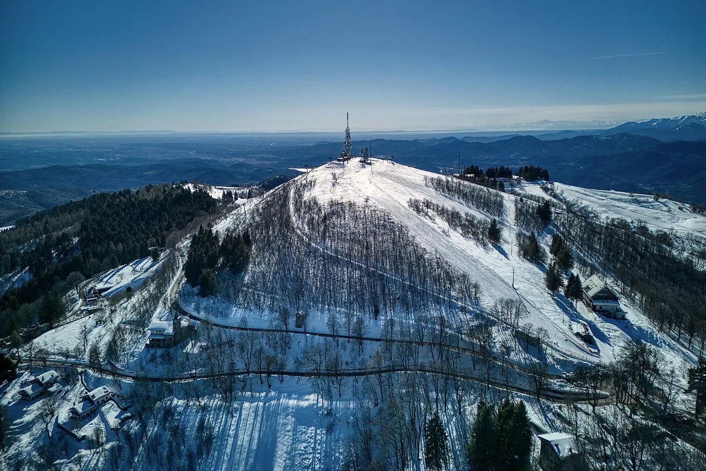

<style>
  /* ── travelogue / folded-map register ───────────────────────────── */
  @import url('https://fonts.googleapis.com/css2?family=Fraunces:opsz,wght,SOFT@9..144,300..900,0..100&family=Cormorant+Garamond:ital,wght@0,400..700;1,400..700&family=Caveat:wght@500;700&family=Special+Elite&display=swap');

  :root{
    --paper:#f4ead4;
    --paper-edge:#e9dcb8;
    --paper-shadow:#d4c490;
    --ink:#1d1814;
    --ink-soft:#4a3e30;
    --lake:#1f4061;
    --lake-mid:#345d80;
    --sky:#a9c3d9;
    --rust:#8c3e1f;
    --rust-dark:#5b2510;
    --gold:#a87c2b;
    --gold-light:#d9b366;
    --moss:#4a6238;
    --fold:#b8a878;
    --stamp:#7a1c1c;
  }

  .travelogue{
    background:
      radial-gradient(ellipse 800px 400px at 30% 8%, rgba(255,245,210,.5), transparent 60%),
      radial-gradient(ellipse 700px 500px at 80% 70%, rgba(168,124,43,.08), transparent 60%),
      repeating-linear-gradient(0deg, rgba(120,90,40,.025) 0 1px, transparent 1px 4px),
      var(--paper);
    color:var(--ink);
    font-family:'Cormorant Garamond', Georgia, serif;
    font-size:18px;
    line-height:1.6;
    min-height:100vh;
    padding:0 0 6rem;
    position:relative;
    overflow:hidden;
  }
  .travelogue::before{
    /* aged paper edge vignette */
    content:"";
    position:absolute; inset:0;
    background:
      radial-gradient(ellipse 90% 60% at 50% 50%, transparent 55%, rgba(90,60,20,.18) 100%),
      radial-gradient(circle at 12% 22%, rgba(120,80,30,.05), transparent 8%),
      radial-gradient(circle at 88% 78%, rgba(120,80,30,.06), transparent 10%);
    pointer-events:none;
    z-index:1;
  }
  .travelogue > *{ position:relative; z-index:2; }

  /* ── COVER ──────────────────────────────────────────────────────── */
  .cover{
    padding:5.5rem 4rem 4rem;
    border-bottom:1px dashed var(--fold);
    position:relative;
  }
  .cover-grid{
    display:grid;
    grid-template-columns: 1.1fr 1fr;
    gap:3rem;
    align-items:end;
  }
  .cover-meta{
    font-family:'Special Elite', monospace;
    font-size:11px;
    letter-spacing:.18em;
    text-transform:uppercase;
    color:var(--ink-soft);
    margin-bottom:2rem;
    display:flex;
    flex-wrap:wrap;
    gap:1.5rem;
    border-top:1px solid var(--ink);
    border-bottom:1px solid var(--ink);
    padding:.6rem 0;
  }
  .cover-meta b{ font-weight:normal; color:var(--rust); }
  .cover-kicker{
    font-family:'Caveat', cursive;
    font-size:42px;
    color:var(--rust);
    transform:rotate(-2deg);
    display:inline-block;
    margin-bottom:.4rem;
  }
  .cover-title{
    font-family:'Fraunces', serif;
    font-weight:300;
    font-style:italic;
    font-size:clamp(56px, 9vw, 124px);
    line-height:.95;
    color:var(--ink);
    letter-spacing:-.02em;
    margin:0 0 1.4rem;
  }
  .cover-title em{
    font-style:normal;
    font-weight:600;
    color:var(--rust-dark);
    display:block;
    font-size:.5em;
    letter-spacing:.04em;
    text-transform:uppercase;
    margin-top:.6rem;
  }
  .cover-blurb{
    font-style:italic;
    font-size:21px;
    color:var(--ink-soft);
    max-width:36em;
    border-left:3px double var(--gold);
    padding-left:1.2rem;
  }
  .cover-hero{
    position:relative;
    aspect-ratio: 5/4;
    overflow:hidden;
    border:8px solid #fff;
    box-shadow: 0 1px 0 var(--paper-shadow), 0 10px 24px rgba(60,40,10,.22), 0 30px 60px rgba(60,40,10,.15);
    transform:rotate(1.4deg);
  }
  .cover-hero img, .cover-hero object{
    width:100%; height:100%; object-fit:cover; display:block;
  }
  .cover-stamp{
    position:absolute;
    top:1rem; right:1.4rem;
    width:130px; height:130px;
    border:3px double var(--stamp);
    border-radius:50%;
    display:grid; place-content:center;
    text-align:center;
    transform:rotate(-14deg);
    font-family:'Special Elite', monospace;
    font-size:10px;
    line-height:1.3;
    letter-spacing:.15em;
    color:var(--stamp);
    text-transform:uppercase;
    opacity:.85;
    background: radial-gradient(circle, rgba(255,255,255,.0) 60%, rgba(122,28,28,.05) 62%, transparent 63%);
  }
  .cover-stamp b{ font-size:22px; display:block; font-family:'Fraunces', serif; font-weight:600; letter-spacing:.05em; }
  .cover-margin-note{
    position:absolute;
    left:4rem;
    bottom:.5rem;
    font-family:'Caveat', cursive;
    font-size:24px;
    color:var(--rust);
    transform:rotate(-1deg);
  }
  .cover-margin-note::after{
    content:" ↘";
    font-family:'Caveat', cursive;
    font-size:30px;
  }

  /* ── HORIZONTAL FOLDS ───────────────────────────────────────────── */
  .fold-rule{
    height:0;
    border-top:1px dashed var(--fold);
    margin:0 4rem;
    position:relative;
  }
  .fold-rule::before, .fold-rule::after{
    content:"✂";
    position:absolute;
    top:-12px;
    color:var(--fold);
    font-size:18px;
    background:var(--paper);
    padding:0 .4rem;
  }
  .fold-rule::before{ left:-1.6rem; }
  .fold-rule::after{ right:-1.6rem; }

  /* ── SECTION HEAD ───────────────────────────────────────────────── */
  .chap{
    padding:4rem 4rem 1rem;
  }
  .chap-num{
    font-family:'Special Elite', monospace;
    font-size:11px;
    letter-spacing:.3em;
    text-transform:uppercase;
    color:var(--gold);
    margin-bottom:.6rem;
  }
  .chap-it{
    font-family:'Caveat', cursive;
    font-size:32px;
    color:var(--rust);
    transform:rotate(-1deg);
    display:inline-block;
    margin-bottom:.2rem;
  }
  .chap-title{
    font-family:'Fraunces', serif;
    font-weight:400;
    font-style:italic;
    font-size:54px;
    line-height:1;
    margin:0 0 .8rem;
    color:var(--ink);
    letter-spacing:-.01em;
  }
  .chap-title b{ font-style:normal; font-weight:600; color:var(--lake); }
  .chap-lead{
    font-size:20px;
    color:var(--ink-soft);
    max-width:46em;
    margin:0;
  }

  /* ── L'ANCORA — anchor block ───────────────────────────────────── */
  .anchor{
    padding:1.5rem 4rem 4rem;
    display:grid;
    grid-template-columns: 1.1fr 1fr;
    gap:3rem;
  }
  .anchor-photo{
    position:relative;
    aspect-ratio:4/3;
    border:8px solid #fff;
    overflow:hidden;
    box-shadow: 0 1px 0 var(--paper-shadow), 0 12px 24px rgba(60,40,10,.2);
    transform:rotate(-1.2deg);
  }
  .anchor-photo img{ width:100%; height:100%; object-fit:cover; }
  .anchor-photo .caption{
    position:absolute; bottom:-2.2rem; left:1rem;
    font-family:'Caveat', cursive;
    font-size:20px;
    color:var(--ink-soft);
    transform:rotate(-1deg);
  }
  .anchor-text{
    padding-top:1rem;
  }
  .anchor-pull{
    font-family:'Fraunces', serif;
    font-weight:300;
    font-style:italic;
    font-size:34px;
    line-height:1.2;
    color:var(--rust-dark);
    margin:0 0 1.4rem;
    border-left:3px double var(--gold);
    padding-left:1.4rem;
  }
  .anchor-specs{
    list-style:none;
    padding:0; margin:1.5rem 0 0;
    border-top:1px solid var(--ink);
    border-bottom:1px solid var(--ink);
  }
  .anchor-specs li{
    display:grid;
    grid-template-columns: 9rem 1fr;
    gap:1rem;
    padding:.55rem 0;
    border-bottom:1px dotted rgba(0,0,0,.15);
    font-family:'Cormorant Garamond', serif;
    font-size:17px;
  }
  .anchor-specs li:last-child{ border-bottom:none; }
  .anchor-specs .k{
    font-family:'Special Elite', monospace;
    font-size:11px;
    letter-spacing:.16em;
    text-transform:uppercase;
    color:var(--ink-soft);
    padding-top:3px;
  }
  .closure-warn{
    margin-top:1.2rem;
    background: repeating-linear-gradient(45deg, #fff7e0 0 12px, #ffe6a8 12px 14px);
    border:1px solid var(--gold);
    padding:.6rem 1rem;
    font-family:'Special Elite', monospace;
    font-size:12px;
    letter-spacing:.06em;
    color:var(--rust-dark);
  }

  /* ── MAP (vector folded panel) ─────────────────────────────────── */
  .map-wrap{
    margin:3rem 4rem;
    padding:2.5rem;
    background:
      linear-gradient(to right, transparent 0, rgba(184,168,120,.18) 33.3%, transparent 33.4%, transparent 66.6%, rgba(184,168,120,.18) 66.7%),
      radial-gradient(ellipse at center, rgba(255,255,255,.5), rgba(244,234,212,.3)),
      #f1e6c4;
    border:1px solid var(--fold);
    position:relative;
    box-shadow: inset 0 0 80px rgba(120,90,40,.1);
  }
  .map-wrap::before, .map-wrap::after{
    content:"";
    position:absolute;
    top:0; bottom:0;
    width:1px;
    background:repeating-linear-gradient(0deg, transparent 0 4px, var(--fold) 4px 6px);
  }
  .map-wrap::before{ left:33.3%; }
  .map-wrap::after{ left:66.6%; }
  .map-title{
    font-family:'Caveat', cursive;
    font-size:28px;
    color:var(--rust);
    text-align:center;
    margin-bottom:.5rem;
  }
  .map-sub{
    font-family:'Special Elite', monospace;
    font-size:11px;
    letter-spacing:.2em;
    text-transform:uppercase;
    color:var(--ink-soft);
    text-align:center;
    margin-bottom:1.5rem;
  }
  svg.lake-map{
    display:block;
    width:100%;
    height:auto;
    max-height:520px;
  }
  .map-legend{
    display:flex;
    justify-content:center;
    gap:2rem;
    margin-top:1rem;
    font-family:'Special Elite', monospace;
    font-size:11px;
    letter-spacing:.1em;
    text-transform:uppercase;
    color:var(--ink-soft);
    flex-wrap:wrap;
  }
  .map-legend span{ display:flex; align-items:center; gap:.5rem; }
  .map-legend i{
    width:14px; height:14px; border-radius:50%;
    display:inline-block;
    font-style:normal;
  }

  /* ── ITINERARY TIMETABLE ────────────────────────────────────────── */
  .itinerary{
    padding:0 4rem;
  }
  .it-row{
    display:grid;
    grid-template-columns: 9rem 1fr 1.1fr;
    gap:2rem;
    padding:2rem 0;
    border-bottom:1px dashed var(--fold);
    align-items:start;
  }
  .it-row.dinner{
    background: linear-gradient(180deg, transparent, rgba(168,124,43,.06));
    padding:2.5rem 1.5rem;
    margin: 1rem -1.5rem;
    border:1px solid var(--gold-light);
    border-radius:0;
  }
  .it-when{
    font-family:'Special Elite', monospace;
    font-size:13px;
    letter-spacing:.18em;
    text-transform:uppercase;
    color:var(--rust);
  }
  .it-when b{
    display:block;
    font-family:'Fraunces', serif;
    font-weight:600;
    font-style:italic;
    font-size:28px;
    letter-spacing:-.01em;
    color:var(--ink);
    margin-bottom:.2rem;
    text-transform:none;
  }
  .it-when .clock{
    display:block;
    margin-top:.4rem;
    font-size:11px;
    color:var(--ink-soft);
  }
  .it-body h4{
    font-family:'Fraunces', serif;
    font-weight:500;
    font-style:italic;
    font-size:24px;
    margin:0 0 .4rem;
    color:var(--lake);
  }
  .it-body p{ margin:.4rem 0; }
  .it-body sup{ font-size:10px; }
  .it-body sup a{ color:var(--rust); text-decoration:none; border-bottom:1px dotted var(--rust); }
  .it-card{
    position:relative;
    border:6px solid #fff;
    box-shadow: 0 1px 0 var(--paper-shadow), 0 8px 18px rgba(60,40,10,.18);
    transform:rotate(1deg);
    aspect-ratio: 3/2;
    overflow:hidden;
  }
  .it-card.no-img{
    background: linear-gradient(135deg, var(--lake) 0%, var(--lake-mid) 100%);
    display:grid;
    place-content:center;
    color:rgba(255,255,255,.85);
    text-align:center;
    padding:1rem;
  }
  .it-card.no-img b{
    display:block;
    font-family:'Fraunces', serif;
    font-style:italic;
    font-size:30px;
    color:var(--gold-light);
    font-weight:400;
  }
  .it-card.no-img small{
    font-family:'Caveat', cursive;
    font-size:20px;
    color:rgba(255,255,255,.65);
  }
  .it-card img{ width:100%; height:100%; object-fit:cover; display:block; }
  .it-card .stamp{
    position:absolute;
    bottom:-.4rem; left:-.4rem;
    background:#fff;
    padding:.25rem .6rem;
    font-family:'Caveat', cursive;
    font-size:20px;
    color:var(--rust);
    border:1px solid var(--rust);
    transform:rotate(-3deg);
    box-shadow: 0 2px 5px rgba(0,0,0,.15);
  }

  /* ── SLEEP postcards ────────────────────────────────────────────── */
  .sleep{
    padding:0 4rem;
  }
  .sleep-grid{
    display:grid;
    grid-template-columns: repeat(2, 1fr);
    gap:3.5rem 3rem;
    margin-top:2.5rem;
  }
  .postcard{
    background:#fbf6e7;
    border:1px solid var(--paper-shadow);
    padding:.8rem;
    box-shadow: 0 1px 0 var(--paper-shadow), 0 14px 28px rgba(60,40,10,.16);
    position:relative;
  }
  .postcard:nth-child(odd){ transform:rotate(-.8deg); }
  .postcard:nth-child(even){ transform:rotate(.6deg); }
  .postcard-photo{
    aspect-ratio: 5/3;
    overflow:hidden;
    position:relative;
  }
  .postcard-photo img{ width:100%; height:100%; object-fit:cover; display:block; }
  .postcard-photo.placeholder{
    background:linear-gradient(135deg, var(--lake), var(--lake-mid));
    display:grid; place-content:center;
    color:var(--gold-light);
    font-family:'Fraunces', serif;
    font-style:italic;
    font-size:28px;
    text-align:center;
    padding:1rem;
  }
  .postcard-stripe{
    display:flex;
    justify-content:space-between;
    align-items:baseline;
    padding:.6rem .3rem .2rem;
    border-bottom:1px dotted var(--ink-soft);
  }
  .postcard-stripe h3{
    font-family:'Fraunces', serif;
    font-weight:500;
    font-style:italic;
    font-size:24px;
    margin:0;
    color:var(--ink);
  }
  .postcard-stripe h3 a{ color:inherit; text-decoration:none; border-bottom:1px solid transparent; }
  .postcard-stripe h3 a:hover{ border-bottom-color:var(--rust); }
  .postcard-price{
    font-family:'Special Elite', monospace;
    font-size:12px;
    color:var(--rust);
    letter-spacing:.05em;
  }
  .postcard-body{
    padding:.4rem .3rem .2rem;
    font-size:16.5px;
    color:var(--ink-soft);
  }
  .postcard-body sup{ font-size:10px; }
  .postcard-body sup a{ color:var(--rust); text-decoration:none; }
  .postcard-meta{
    display:flex;
    flex-wrap:wrap;
    gap:.6rem;
    margin-top:.6rem;
    padding-top:.5rem;
    border-top:1px dashed var(--paper-shadow);
  }
  .postcard-meta span{
    font-family:'Special Elite', monospace;
    font-size:10.5px;
    letter-spacing:.12em;
    text-transform:uppercase;
    color:var(--ink);
    padding:.2rem .5rem;
    border:1px solid var(--ink);
  }
  .postcard-meta span.tier-1{ background:#3b5e3b; color:#fff; border-color:#3b5e3b; }
  .postcard-meta span.tier-2{ background:#a87c2b; color:#fff; border-color:#a87c2b; }
  .postcard-meta span.tier-3{ background:#7a1c1c; color:#fff; border-color:#7a1c1c; }
  .postcard-meta span.tier-4{ background:#1f4061; color:#fff; border-color:#1f4061; }
  .postcard-pin{
    position:absolute;
    top:-10px; left:50%;
    transform:translateX(-50%);
    width:18px; height:18px;
    border-radius:50%;
    background: radial-gradient(circle at 35% 35%, #ff7a5a, #c12d10 70%);
    box-shadow: 0 3px 6px rgba(0,0,0,.3);
  }

  /* ── SEASONAL — late may strip ──────────────────────────────────── */
  .seasonal{
    margin:4rem 4rem 0;
    border-top:6px double var(--gold);
    border-bottom:6px double var(--gold);
    padding:2.5rem 0;
  }
  .seasonal-head{
    text-align:center;
    margin-bottom:2rem;
  }
  .seasonal-head .ka{
    font-family:'Caveat', cursive;
    font-size:28px;
    color:var(--rust);
    display:block;
  }
  .seasonal-head h2{
    font-family:'Fraunces', serif;
    font-style:italic;
    font-weight:400;
    font-size:40px;
    margin:0;
  }
  .seasonal-grid{
    display:grid;
    grid-template-columns: repeat(3, 1fr);
    gap:2.5rem;
  }
  .season-card{
    text-align:center;
  }
  .season-card .photo{
    aspect-ratio:4/3;
    overflow:hidden;
    border:5px solid #fff;
    box-shadow: 0 1px 0 var(--paper-shadow), 0 8px 18px rgba(60,40,10,.18);
    margin-bottom:1rem;
  }
  .season-card .photo img{ width:100%; height:100%; object-fit:cover; display:block; }
  .season-card .photo.placeholder{
    background: linear-gradient(135deg, var(--moss), #6a8050);
    display:grid; place-content:center;
    color:#f4ead4;
    font-family:'Fraunces', serif;
    font-style:italic;
    font-size:24px;
  }
  .season-card h4{
    font-family:'Fraunces', serif;
    font-weight:500;
    font-style:italic;
    font-size:22px;
    margin:0 0 .3rem;
    color:var(--ink);
  }
  .season-card .date{
    font-family:'Special Elite', monospace;
    font-size:11px;
    letter-spacing:.15em;
    text-transform:uppercase;
    color:var(--rust);
    margin-bottom:.6rem;
  }
  .season-card p{
    font-size:15.5px;
    color:var(--ink-soft);
    margin:0;
    text-align:left;
    padding:0 .4rem;
  }
  .season-card p sup{ font-size:9px; }
  .season-card p sup a{ color:var(--rust); text-decoration:none; }

  /* ── MARGINALIA RULES ───────────────────────────────────────────── */
  .rules{
    padding:4rem 4rem 0;
    display:grid;
    grid-template-columns: 1fr .8fr;
    gap:3rem;
    align-items:start;
  }
  .rules-list ol{
    counter-reset:rule;
    list-style:none;
    padding:0;
  }
  .rules-list li{
    counter-increment:rule;
    position:relative;
    padding:1rem 0 1rem 4.5rem;
    border-bottom:1px dashed var(--fold);
    font-size:17px;
    color:var(--ink);
  }
  .rules-list li::before{
    content:counter(rule, decimal-leading-zero);
    position:absolute;
    left:0; top:1rem;
    font-family:'Fraunces', serif;
    font-style:italic;
    font-weight:300;
    font-size:42px;
    color:var(--gold);
    line-height:1;
  }
  .rules-list li b{
    font-family:'Special Elite', monospace;
    font-size:12px;
    font-weight:normal;
    letter-spacing:.12em;
    text-transform:uppercase;
    color:var(--rust);
    display:block;
    margin-bottom:.2rem;
  }
  .rules-list li sup{ font-size:10px; }
  .rules-list li sup a{ color:var(--rust); text-decoration:none; }
  .rules-aside{
    background:#fef0c8;
    border:1px solid var(--gold);
    padding:1.5rem;
    box-shadow: 4px 5px 0 rgba(168,124,43,.18);
    transform:rotate(1.2deg);
    font-family:'Caveat', cursive;
    color:var(--ink);
  }
  .rules-aside h5{
    font-family:'Caveat', cursive;
    font-size:28px;
    color:var(--rust);
    margin:0 0 .6rem;
    border-bottom:1px solid var(--rust);
    padding-bottom:.3rem;
  }
  .rules-aside p{
    font-size:22px;
    line-height:1.35;
    margin:.5rem 0;
  }
  .rules-aside small{
    display:block;
    font-family:'Special Elite', monospace;
    font-size:10px;
    letter-spacing:.14em;
    text-transform:uppercase;
    color:var(--ink-soft);
    margin-top:1rem;
    transform:rotate(-1.2deg);
    transform-origin: left;
  }

  /* ── postscript / IT conferences ────────────────────────────────── */
  .postscript{
    margin:4rem 4rem 0;
    padding:2rem;
    border:1px dashed var(--ink-soft);
    background: rgba(255,255,255,.35);
  }
  .postscript h3{
    font-family:'Special Elite', monospace;
    font-size:13px;
    letter-spacing:.2em;
    text-transform:uppercase;
    color:var(--ink-soft);
    margin:0 0 .8rem;
  }
  .postscript h3::before{ content:"P.S. — "; color:var(--rust); }
  .postscript p{
    margin:0;
    font-family:'Cormorant Garamond', serif;
    font-size:18px;
    font-style:italic;
    color:var(--ink-soft);
  }
  .postscript p sup{ font-size:10px; font-style:normal; }
  .postscript p sup a{ color:var(--rust); text-decoration:none; }

  /* ── COLOPHON ──────────────────────────────────────────────────── */
  .colophon{
    margin:4rem 4rem 0;
    padding-top:2rem;
    border-top:1px solid var(--ink);
    display:grid;
    grid-template-columns: 1fr 2fr;
    gap:2rem;
  }
  .colo-id{
    font-family:'Fraunces', serif;
    font-style:italic;
    font-size:36px;
    line-height:1.1;
    color:var(--ink);
  }
  .colo-id small{
    display:block;
    font-family:'Special Elite', monospace;
    font-size:11px;
    letter-spacing:.18em;
    text-transform:uppercase;
    color:var(--ink-soft);
    margin-top:.4rem;
    font-style:normal;
  }
  .sources{
    display:grid;
    grid-template-columns: repeat(2, 1fr);
    gap:.4rem 1.5rem;
    font-size:13.5px;
  }
  .sources a{
    color:var(--ink);
    text-decoration:none;
    border-bottom:1px dotted var(--ink-soft);
    display:flex;
    align-items:center;
    gap:.5rem;
    padding:.25rem 0;
  }
  .sources a:hover{ border-bottom-color:var(--rust); color:var(--rust); }
  .sources a img{ width:14px; height:14px; flex-shrink:0; opacity:.8; }
  .sources a b{ font-family:'Special Elite', monospace; font-size:10px; color:var(--gold); font-weight:normal; min-width:1.6em; }

  @media (max-width: 920px){
    .cover{ padding:3rem 1.5rem; }
    .cover-grid{ grid-template-columns: 1fr; gap:2rem; }
    .cover-title{ font-size:64px; }
    .anchor, .chap, .seasonal, .rules, .colophon, .postscript{ padding-left:1.5rem; padding-right:1.5rem; margin-left:1.5rem; margin-right:1.5rem; }
    .anchor, .rules, .colophon{ grid-template-columns: 1fr; }
    .seasonal-grid{ grid-template-columns: 1fr; }
    .sleep-grid{ grid-template-columns: 1fr; }
    .it-row{ grid-template-columns: 1fr; }
    .map-wrap{ margin:2rem 1rem; padding:1.2rem; }
    .map-wrap::before, .map-wrap::after{ display:none; }
    .sources{ grid-template-columns: 1fr; }
    .colo-id{ font-size:28px; }
  }
</style>

<article class="travelogue">

  <!-- ── COVER ──────────────────────────────────────────────────── -->
  <section class="cover">
    <div class="cover-meta">
      <span><b>Folio</b> · Atlas Travelogue · No. 1</span>
      <span><b>Stamped</b> · 28 May 2026</span>
      <span><b>Region</b> · Piemonte · Lago d'Orta</span>
      <span><b>Anchor</b> · 45°47'N 8°25'E</span>
    </div>
    <div class="cover-grid">
      <div>
        <span class="cover-kicker">un piccolo weekend ~</span>
        <h1 class="cover-title">Orta<br>San Giulio<em>… anchored on dinner</em></h1>
        <p class="cover-blurb">A weekend built around one table. <a href="https://villacrespi.it/en/our-location/">Villa Crespi</a> sits at Via Fava 18 — a Moorish-revival palace on the Sacro Monte side of town, ten minutes downhill to Piazza Motta, and the same in reverse, uphill, after dinner.<sup><a href="https://villacrespi.it/en/our-location/">[1]</a></sup></p>
      </div>
      <div class="cover-hero">
        <object data="../cover.svg" type="image/svg+xml" aria-label="Isola San Giulio at night"></object>
        <div class="cover-stamp"><b>VC</b>Via Fava 18 · Orta SG · ★★★</div>
      </div>
    </div>
    <div class="cover-margin-note">open the map</div>
  </section>

  <div class="fold-rule"></div>

  <!-- ── L'ANCORA — Villa Crespi anchor ─────────────────────────── -->
  <section class="chap">
    <div class="chap-num">I · L'ancora</div>
    <span class="chap-it">la cena di sabato sera</span>
    <h2 class="chap-title">Saturday's <b>three-star</b> dinner is the whole reason.</h2>
    <p class="chap-lead">Everything else — where to sleep, how to spend the day, where to be on Sunday morning — turns on the uphill walk back to Via Fava after the last glass of wine.</p>
  </section>
  <section class="anchor">
    <figure class="anchor-photo">
      
      <figcaption class="caption">~ la villa, illuminata di sera</figcaption>
    </figure>
    <div class="anchor-text">
      <p class="anchor-pull">"A hyper-opulent Moorish-style palace, minaret and all — one of Italy's strangest and most extraordinary small hotels."</p>
      <p>Antonino Cannavacciuolo's flagship — a three-star Michelin restaurant inside a 14-suite hotel. The trade is honest: dinner cost already broke the ceiling, so either you accept that and sleep upstairs, or you walk back into town on the panoramic road.<sup><a href="https://www.tripadvisor.com/Hotel_Review-g187854-d231279-Reviews-Villa_Crespi-Orta_San_Giulio_Province_of_Novara_Piedmont.html">[2]</a></sup></p>
      <ul class="anchor-specs">
        <li><span class="k">Address</span><span><a href="https://villacrespi.it/en/">Via Fava 18, 28016 Orta San Giulio (NO)</a></span></li>
        <li><span class="k">Stars</span><span>★★★ Michelin · 2026 Guida Italia</span></li>
        <li><span class="k">Suites</span><span>14 (rooms $466 – $1,450 / night)<sup><a href="https://www.tripadvisor.com/Hotel_Review-g187854-d231279-Reviews-Villa_Crespi-Orta_San_Giulio_Province_of_Novara_Piedmont.html">[2]</a></sup></span></li>
        <li><span class="k">Walk to centre</span><span>~10 min downhill to Piazza Motta · the same in reverse, uphill, after dinner<sup><a href="https://villacrespi.it/en/our-location/">[1]</a></sup></span></li>
        <li><span class="k">To Sacro Monte</span><span>600 m · ~15 min along the chapel paths<sup><a href="https://villacrespi.it/en/our-location/">[1]</a></sup></span></li>
        <li><span class="k">Station</span><span>Orta-Miasino — 800 m<sup><a href="https://villacrespi.it/en/our-location/">[1]</a></sup></span></li>
      </ul>
      <div class="closure-warn">⚠ ANNUAL CLOSURE — Villa Crespi (hotel + restaurant) closed 10–20 Aug 2026 for Cannavacciuolo's August break.<sup><a href="https://villacrespi.it/en/our-location/">[1]</a></sup></div>
    </div>
  </section>

  <div class="fold-rule"></div>

  <!-- ── FOLDED MAP ─────────────────────────────────────────────── -->
  <section class="chap">
    <div class="chap-num">II · La cartina</div>
    <span class="chap-it">il lago, ripiegato in tre</span>
    <h2 class="chap-title">A folded <b>map</b> of the weekend.</h2>
    <p class="chap-lead">Walking-distance choices sit on the east shore around the anchor. The 30 km radius reabsorbs the sister property (Pettenasco), the Lissoni boutique (Pella), and the seasonal day-trips beyond the ridge.</p>
  </section>

  <div class="map-wrap">
    <div class="map-title">Lago d'Orta — anello azzurro</div>
    <div class="map-sub">Sketched not to scale · distances are by road</div>
    <svg class="lake-map" viewBox="0 0 1000 540" xmlns="http://www.w3.org/2000/svg">
      <!-- compass rose -->
      <g transform="translate(60,70)" opacity=".75">
        <circle r="34" fill="none" stroke="#8c3e1f" stroke-width="1"/>
        <text x="0" y="-40" text-anchor="middle" font-family="Special Elite" font-size="12" fill="#8c3e1f">N</text>
        <text x="0" y="50" text-anchor="middle" font-family="Special Elite" font-size="11" fill="#8c3e1f" opacity=".7">S</text>
        <text x="40" y="4" text-anchor="middle" font-family="Special Elite" font-size="11" fill="#8c3e1f" opacity=".7">E</text>
        <text x="-40" y="4" text-anchor="middle" font-family="Special Elite" font-size="11" fill="#8c3e1f" opacity=".7">W</text>
        <polygon points="0,-26 -6,0 0,-12 6,0" fill="#8c3e1f"/>
        <polygon points="0,26 -6,0 0,12 6,0" fill="#8c3e1f" opacity=".5"/>
      </g>

      <!-- mountains (decoration west/east) -->
      <path d="M0 420 L40 380 L80 410 L120 360 L170 400 L220 370 L260 400 L300 350 L340 405 L380 380 L420 415 L450 395 L0 540 Z" fill="#a89868" opacity=".25"/>
      <path d="M620 420 L680 360 L720 405 L770 350 L820 400 L880 360 L940 400 L1000 380 L1000 540 L620 540 Z" fill="#a89868" opacity=".25"/>

      <!-- Lake body -->
      <path d="M380 80 Q330 200 360 320 Q400 460 480 480 Q580 500 600 380 Q620 220 580 130 Q520 70 460 75 Q420 78 380 80 Z"
            fill="#3a6b8c" opacity=".75" stroke="#1f4061" stroke-width="2"/>
      <path d="M390 90 Q345 200 370 310 Q405 450 480 470 Q570 488 590 380 Q610 230 575 140 Q520 85 460 88 Q420 92 390 90 Z"
            fill="none" stroke="#fff" stroke-width=".5" opacity=".4"/>
      <!-- water shimmer -->
      <path d="M420 200 q40 4 80 0 t80 0" fill="none" stroke="#fff" stroke-width="1" opacity=".4"/>
      <path d="M400 280 q40 4 80 0 t80 0" fill="none" stroke="#fff" stroke-width="1" opacity=".35"/>
      <path d="M420 360 q40 4 80 0 t80 0" fill="none" stroke="#fff" stroke-width="1" opacity=".3"/>

      <!-- Isola San Giulio -->
      <ellipse cx="475" cy="220" rx="18" ry="11" fill="#2a1410"/>
      <rect x="471" y="206" width="3" height="10" fill="#2a1410"/>
      <text x="475" y="195" text-anchor="middle" font-family="Caveat" font-size="15" fill="#1d1814" font-style="italic">Isola San Giulio</text>

      <!-- Orta San Giulio town -->
      <circle cx="540" cy="240" r="6" fill="#8c3e1f"/>
      <text x="555" y="237" font-family="Fraunces" font-style="italic" font-size="18" fill="#1d1814" font-weight="600">Orta SG</text>
      <text x="555" y="252" font-family="Special Elite" font-size="9" fill="#4a3e30" letter-spacing="1">Piazza Motta</text>

      <!-- Villa Crespi anchor -->
      <g transform="translate(580,265)">
        <circle r="11" fill="#7a1c1c" stroke="#fff" stroke-width="2"/>
        <text x="0" y="3" text-anchor="middle" font-family="Fraunces" font-size="11" fill="#fff" font-weight="700">VC</text>
        <text x="18" y="3" font-family="Fraunces" font-style="italic" font-size="16" fill="#7a1c1c" font-weight="600">Villa Crespi ★★★</text>
        <text x="18" y="18" font-family="Caveat" font-size="14" fill="#4a3e30">via Fava 18 · the anchor</text>
      </g>

      <!-- walk arrow Orta → Villa Crespi -->
      <path d="M548 245 Q565 252 575 262" fill="none" stroke="#7a1c1c" stroke-width="1.5" stroke-dasharray="4 3" marker-end="url(#arrow)"/>
      <text x="548" y="270" font-family="Caveat" font-size="13" fill="#7a1c1c" font-style="italic">~10 min uphill</text>

      <!-- Pettenasco (LAQUA) -->
      <circle cx="558" cy="160" r="5" fill="#a87c2b"/>
      <text x="568" y="158" font-family="Fraunces" font-style="italic" font-size="14" fill="#1d1814">Pettenasco</text>
      <text x="568" y="172" font-family="Caveat" font-size="13" fill="#a87c2b">LAQUA ★ · sister property</text>

      <!-- Pella -->
      <circle cx="390" cy="290" r="5" fill="#a87c2b"/>
      <text x="350" y="295" text-anchor="end" font-family="Fraunces" font-style="italic" font-size="14" fill="#1d1814">Pella</text>
      <text x="350" y="308" text-anchor="end" font-family="Caveat" font-size="13" fill="#a87c2b">Casa Fantini</text>

      <!-- Madonna del Sasso -->
      <polygon points="340,250 345,235 350,250" fill="#5b2510"/>
      <text x="338" y="225" text-anchor="end" font-family="Caveat" font-size="13" fill="#5b2510">Madonna del Sasso</text>
      <text x="338" y="238" text-anchor="end" font-family="Special Elite" font-size="9" fill="#4a3e30">338 m · "balcony of Cusio"</text>

      <!-- Sacro Monte -->
      <polygon points="640,235 648,218 656,235" fill="#5b2510"/>
      <polygon points="650,238 656,225 662,238" fill="#5b2510" opacity=".7"/>
      <text x="668" y="225" font-family="Caveat" font-size="13" fill="#5b2510">Sacro Monte · UNESCO</text>
      <text x="668" y="238" font-family="Special Elite" font-size="9" fill="#4a3e30">20 chapels · 600 m from VC</text>

      <!-- Mottarone -->
      <polygon points="800,280 820,230 840,280" fill="#5b2510"/>
      <text x="850" y="265" font-family="Fraunces" font-style="italic" font-size="14" fill="#1d1814">Mottarone</text>
      <text x="850" y="278" font-family="Caveat" font-size="13" fill="#5b2510">1,492 m · seven lakes</text>
      <path d="M600 270 Q700 280 800 280" fill="none" stroke="#4a3e30" stroke-width="1" stroke-dasharray="2 2" opacity=".6"/>
      <text x="700" y="290" text-anchor="middle" font-family="Caveat" font-size="11" fill="#4a3e30" opacity=".75">via SP41 from Armeno · 30 min</text>

      <!-- Stresa & Verbania to the east -->
      <text x="930" y="350" text-anchor="end" font-family="Special Elite" font-size="10" fill="#4a3e30" letter-spacing="1">→ STRESA · 22 km</text>
      <text x="930" y="365" text-anchor="end" font-family="Special Elite" font-size="10" fill="#4a3e30" letter-spacing="1">→ VERBANIA · 29 km</text>
      <text x="930" y="380" text-anchor="end" font-family="Special Elite" font-size="10" fill="#4a3e30" letter-spacing="1">→ BAVENO · 25 km</text>
      <text x="930" y="395" text-anchor="end" font-family="Special Elite" font-size="10" fill="#4a3e30" letter-spacing="1">→ ARONA · 19 km</text>
      <text x="930" y="410" text-anchor="end" font-family="Caveat" font-size="13" fill="#1f4061">— the 30 km radius —</text>

      <!-- Gattinara / Ghemme south-east -->
      <circle cx="780" cy="470" r="4" fill="#7a1c1c"/>
      <text x="788" y="473" font-family="Fraunces" font-style="italic" font-size="13" fill="#1d1814">Gattinara · Ghemme</text>
      <text x="788" y="486" font-family="Caveat" font-size="12" fill="#7a1c1c">Cantine Aperte · 30–31 May</text>

      <!-- Omegna north -->
      <circle cx="475" cy="100" r="4" fill="#4a6238"/>
      <text x="485" y="103" font-family="Fraunces" font-style="italic" font-size="13" fill="#1d1814">Omegna</text>
      <text x="485" y="116" font-family="Caveat" font-size="12" fill="#4a6238">Alessi outlet · design town</text>

      <!-- arrows -->
      <defs>
        <marker id="arrow" markerWidth="10" markerHeight="10" refX="8" refY="3" orient="auto">
          <path d="M0,0 L0,6 L8,3 Z" fill="#7a1c1c"/>
        </marker>
      </defs>
    </svg>
    <div class="map-legend">
      <span><i style="background:#7a1c1c"></i>The anchor</span>
      <span><i style="background:#a87c2b"></i>Lodging cluster</span>
      <span><i style="background:#5b2510;border-radius:0;clip-path:polygon(50% 0,100% 100%,0 100%)"></i>Heights</span>
      <span><i style="background:#4a6238"></i>Day-trip towns</span>
    </div>
  </div>

  <div class="fold-rule"></div>

  <!-- ── ITINERARY ────────────────────────────────────────────────── -->
  <section class="chap">
    <div class="chap-num">III · L'itinerario</div>
    <span class="chap-it">friday afternoon → sunday lunch</span>
    <h2 class="chap-title">A weekend, hour by <b>hour</b>.</h2>
    <p class="chap-lead">The shape is fixed by two things: the dinner sits in the middle, and the pedestrian zone bars cars from the lakefront. Drop bags first, park later, walk everywhere.</p>
  </section>

  <div class="itinerary">

    <div class="it-row">
      <div class="it-when">
        <b>Venerdì</b>Friday<span class="clock">15:30 – 18:30</span>
      </div>
      <div class="it-body">
        <h4>Arrive · drop bags · descend to Piazza Motta</h4>
        <p>Train to Orta-Miasino — the station is 800 m from Villa Crespi.<sup><a href="https://villacrespi.it/en/our-location/">[1]</a></sup> Drive in, park on Via Panoramica, walk down. The historic centre is pedestrian-only; check-in for in-town hotels happens on foot. The Wednesday market on Piazza Motta has run since 1228 — Friday is quieter, an aperitivo on the square works better.</p>
        <p>End the day with a private motoscafi crossing to <a href="https://benedettineisolasangiulio.org/en/the-island-of-st-giulio/">Isola San Giulio</a> for the "Way of Silence" loop around the cloistered abbey — ~10 min, signs in four languages.<sup><a href="https://www.navigazioneorta.it/en/public-boat-service.html">[23]</a></sup></p>
      </div>
      <figure class="it-card">
        
        <span class="stamp">Piazza Motta</span>
      </figure>
    </div>

    <div class="it-row">
      <div class="it-when">
        <b>Sabato</b>Saturday<span class="clock">09:00 – 17:00</span>
      </div>
      <div class="it-body">
        <h4>Sacro Monte in the morning · pick one big day-trip</h4>
        <p>Walk up to <a href="https://www.sacrimonti.org/en/sacro-monte-di-orta">Sacro Monte di Orta</a> — UNESCO site, 20 chapels on Saint Francis's life, free admission, 9:30-18:30 weekends in 2026. About 1.5–2 hours. From the back of the chapel route you descend directly past Villa Crespi.<sup><a href="https://www.sacrimonti.org/en/sacro-monte-di-orta">[22]</a></sup></p>
        <p>For the afternoon, pick <em>one</em>: Mottarone summit drive (SP41 from Armeno, 30 min — the cable car has been closed since the 2021 disaster);<sup><a href="https://www.stresaturismo.it/en/excursions/the-stresa-alpino-mottarone-cablecar-the-cablecar-is-closed/">[14]</a></sup> the <a href="https://www.villataranto.it/en/gardens/">Villa Taranto rhododendron wood</a> in Verbania; or the design pilgrimage to <a href="https://www.visitomegna.it/en/poi/outlets/alessi-outlet/">Omegna</a> for the Alessi outlet and Mendini's Forum.</p>
      </div>
      <figure class="it-card">
        
        <span class="stamp">UNESCO 1980</span>
      </figure>
    </div>

    <div class="it-row dinner">
      <div class="it-when">
        <b>Sabato sera</b>Saturday night<span class="clock">19:30 — late</span>
      </div>
      <div class="it-body">
        <h4>★★★ Cena · Villa Crespi</h4>
        <p>Dinner at <a href="https://villacrespi.it/en/">Cannavacciuolo's flagship</a>. Two open questions to call about before you go — the canonical run flagged these as <em>not independently re-verified</em>: tasting-menu price, wine-pairing cost, meal length, dress code, reservation lead time.<sup><a href="https://www.tripadvisor.com/Hotel_Review-g187854-d231279-Reviews-Villa_Crespi-Orta_San_Giulio_Province_of_Novara_Piedmont.html">[2]</a></sup></p>
        <p>The single thing that changes everything: <strong>how late does dinner run?</strong> If it ends before midnight, the 10-minute uphill walk back along Via Panoramica is charming. If it ends after midnight, the walk turns from charming to grim and a pre-booked Bacchetta cab is mandatory — there is no taxi rank in Orta.<sup><a href="http://lakeorta.com/taxi/index.htm">[11]</a></sup></p>
      </div>
      <figure class="it-card">
        
        <span class="stamp">★★★ 2026</span>
      </figure>
    </div>

    <div class="it-row">
      <div class="it-when">
        <b>Domenica</b>Sunday<span class="clock">09:00 – 13:00</span>
      </div>
      <div class="it-body">
        <h4>Boat to the island · or hike up Madonna del Sasso</h4>
        <p>Slow start. The public Navigazione Orta ferry runs Orta → Isola San Giulio every 15 min from 09:00 — €5 return.<sup><a href="https://www.navigazioneorta.it/en/public-boat-service.html">[23]</a></sup> Walk the Basilica + Way of Silence loop in an hour.</p>
        <p>Alternative: drive to Pella on the west shore and hike up to the <a href="https://www.piemonte.uno/en/piedmont/verbano-cusio-ossola/sanctuary-madonna-del-sasso">Madonna del Sasso sanctuary</a> at 338 m — the "balcony of Cusio" overlooks almost the entire lake.<sup><a href="https://www.piemonte.uno/en/piedmont/verbano-cusio-ossola/sanctuary-madonna-del-sasso">[10]</a></sup></p>
      </div>
      <figure class="it-card">
        
        <span class="stamp">€5 return</span>
      </figure>
    </div>

    <div class="it-row">
      <div class="it-when">
        <b>Domenica</b>Sunday lunch<span class="clock">13:00 – 15:00</span>
      </div>
      <div class="it-body">
        <h4>The 1★ bracket option</h4>
        <p>Two 1-Michelin alternatives sit inside the radius. <a href="https://www.locandadiorta.com/en">Locanda di Orta</a> (chef Andrea Monesi, in the pedestrian zone — tasting €180 + €100 pairing) and Cannavacciuolo's own sister property <a href="https://laquabythelake.it/en/">LAQUA by the Lake</a> in Pettenasco both earn one star in the 2026 Italia Guide.<sup><a href="https://guide.michelin.com/en/piemonte/orta-san-giulio/restaurant/locanda-di-orta">[7]</a></sup><sup><a href="https://laquabythelake.it/en/">[8]</a></sup></p>
        <p>Bracketing the Saturday 3★ with a Sunday-lunch 1★ is a real option — not a stretch.</p>
      </div>
      <figure class="it-card">
        
        <span class="stamp">★ 2026 · LAQUA</span>
      </figure>
    </div>

  </div>

  <div class="fold-rule" style="margin-top:3rem"></div>

  <!-- ── SLEEP postcards ─────────────────────────────────────────── -->
  <section class="chap">
    <div class="chap-num">IV · Dove dormire</div>
    <span class="chap-it">quattro modi di dormire vicino</span>
    <h2 class="chap-title">Four ways to <b>sleep nearby</b>.</h2>
    <p class="chap-lead">The hierarchy that converges across both lodging surveys: stay at Villa Crespi itself, take the literal next-door B&B, or pick a cluster — Via Panoramica (5–12 min walk) or Piazza Motta (pedestrian-only). Skip anything that puts you 30 minutes on foot after a wine-pairing night.</p>
  </section>

  <div class="sleep">
    <div class="sleep-grid">

      <div class="postcard">
        <div class="postcard-pin"></div>
        <div class="postcard-photo">
          
        </div>
        <div class="postcard-stripe">
          <h3><a href="https://villacrespi.it/en/">Villa Crespi</a></h3>
          <span class="postcard-price">$466 – $1,450/night</span>
        </div>
        <div class="postcard-body">
          <p>14 suites inside the Moorish-revival palace. If the dinner bill already broke the ceiling — sleep upstairs and walk to the lift instead of up the road.<sup><a href="https://www.tripadvisor.com/Hotel_Review-g187854-d231279-Reviews-Villa_Crespi-Orta_San_Giulio_Province_of_Novara_Piedmont.html">[2]</a></sup></p>
          <div class="postcard-meta">
            <span class="tier-1">0 m · in-house</span>
            <span>Via Fava 18</span>
            <span>4.7 ★ · #1 of 11</span>
          </div>
        </div>
      </div>

      <div class="postcard">
        <div class="postcard-pin" style="background: radial-gradient(circle at 35% 35%, #ffd97a, #c98b1c 70%);"></div>
        <div class="postcard-photo placeholder">Villa Pinin<br><small style="font-family:Caveat; font-size:18px; opacity:.8">il vicino di casa</small></div>
        <div class="postcard-stripe">
          <h3><a href="https://www.villapinin.com/">Villa Pinin</a></h3>
          <span class="postcard-price">€80 – €120</span>
        </div>
        <div class="postcard-body">
          <p>Four rooms on Via Fava 12 — 20 m from the lake, ~50 m from Villa Crespi. Three of four rooms share a bath. If you'll accept the trade, this is the literal next-door B&B.<sup><a href="https://www.tripadvisor.com/Hotel_Review-g187854-d1639031-Reviews-Villa_Pinin-Orta_San_Giulio_Province_of_Novara_Piedmont.html">[3]</a></sup></p>
          <div class="postcard-meta">
            <span class="tier-1">~50 m</span>
            <span>Via Fava 12</span>
            <span>4.7 ★ · ~90 reviews</span>
          </div>
        </div>
      </div>

      <div class="postcard">
        <div class="postcard-pin" style="background: radial-gradient(circle at 35% 35%, #a8c5e1, #345d80 70%);"></div>
        <div class="postcard-photo placeholder" style="background:linear-gradient(135deg,#345d80,#1f4061)">Hotel La Bussola<br><small style="font-family:Caveat; font-size:18px; opacity:.85">via panoramica · piscina con vista</small></div>
        <div class="postcard-stripe">
          <h3><a href="https://www.hotelbussolaorta.it/en/">Hotel La Bussola</a></h3>
          <span class="postcard-price">$185 – $376</span>
        </div>
        <div class="postcard-body">
          <p>Promontory hotel on Via Panoramica 24 — same road as Villa Crespi, a manageable uphill walk to town. Pool, free parking, lake-view restaurant. The Via Panoramica anchor.<sup><a href="https://www.hotelbussolaorta.it/en/">[4]</a></sup></p>
          <div class="postcard-meta">
            <span class="tier-2">~7 min walk</span>
            <span>Strada Panoramica 24</span>
            <span>4.2 ★ · #3 of 11</span>
          </div>
        </div>
      </div>

      <div class="postcard">
        <div class="postcard-pin" style="background: radial-gradient(circle at 35% 35%, #f6c97a, #a87c2b 70%);"></div>
        <div class="postcard-photo placeholder" style="background:linear-gradient(135deg,#a87c2b,#5b2510)">Hotel Leon d'Oro<br><small style="font-family:Caveat; font-size:18px; opacity:.85">sulla piazza, di fronte all'isola</small></div>
        <div class="postcard-stripe">
          <h3><a href="https://www.albergoleondoro.it/en/3-stars-hotel-lake-orta/hotel-leon-doro">Hotel Leon d'Oro</a></h3>
          <span class="postcard-price">3★ · pedestrian</span>
        </div>
        <div class="postcard-body">
          <p>Piazza Motta 42 — 200 years of single-family management. Two sun terraces over Lake Orta, a private pier with a swimming ladder, a spa. The pedestrian-zone anchor: drop bags on foot, then park up the hill.<sup><a href="https://www.albergoleondoro.it/en/3-stars-hotel-lake-orta/hotel-leon-doro">[5]</a></sup></p>
          <div class="postcard-meta">
            <span class="tier-2">~12 min walk</span>
            <span>Piazza Motta 42</span>
            <span>9.7/10 location</span>
          </div>
        </div>
      </div>

      <div class="postcard">
        <div class="postcard-pin" style="background: radial-gradient(circle at 35% 35%, #ffd97a, #a87c2b 70%);"></div>
        <div class="postcard-photo">
          
        </div>
        <div class="postcard-stripe">
          <h3><a href="https://laquabythelake.it/en/">LAQUA by the Lake</a></h3>
          <span class="postcard-price">Pettenasco · ~3 km</span>
        </div>
        <div class="postcard-body">
          <p>Cannavacciuolo's sister hotel, reopens 3 Apr 2026 — 5 comfort rooms, 14 suites, 2 lake-view penthouses. The in-house restaurant Cannavacciuolo by the Lake holds one Michelin star. Sleeping here doubles as a Sunday-morning base — but forces a pre-booked Bacchetta taxi after dinner.<sup><a href="https://laquabythelake.it/en/">[8]</a></sup><sup><a href="http://lakeorta.com/taxi/index.htm">[11]</a></sup></p>
          <div class="postcard-meta">
            <span class="tier-4">taxi · ~3 km</span>
            <span>Pettenasco shore</span>
            <span>★ Michelin</span>
          </div>
        </div>
      </div>

      <div class="postcard">
        <div class="postcard-pin" style="background: radial-gradient(circle at 35% 35%, #c2d5b9, #4a6238 70%);"></div>
        <div class="postcard-photo placeholder" style="background:linear-gradient(135deg,#4a6238,#2c3d22)">Casa Fantini<br><small style="font-family:Caveat; font-size:18px; opacity:.85">progettata da Piero Lissoni</small></div>
        <div class="postcard-stripe">
          <h3><a href="https://www.casafantinilaketime.com/en/">Casa Fantini · Lake Time</a></h3>
          <span class="postcard-price">Pella · west shore</span>
        </div>
        <div class="postcard-body">
          <p>11 rooms across a restored 19th-century shell and a minimalist new build. Piero Lissoni's project. The base for the Madonna del Sasso hike — but the trade is a 25 km drive around the lake to dinner.</p>
          <div class="postcard-meta">
            <span class="tier-4">taxi · west shore</span>
            <span>Pella</span>
            <span>Michelin Guide hotel</span>
          </div>
        </div>
      </div>

      <div class="postcard" style="grid-column:1/-1; transform:rotate(.3deg)">
        <div class="postcard-stripe" style="border-bottom:none; padding-bottom:.4rem">
          <h3 style="font-size:20px"><a href="https://www.tripadvisor.com/Hotel_Review-g187854-d11998151-Reviews-Hotel_Bocciolo-Orta_San_Giulio_Province_of_Novara_Piedmont.html">⚠ Skip · Hotel Bocciolo</a></h3>
          <span class="postcard-price">~30 min on foot</span>
        </div>
        <div class="postcard-body">
          <p>Reviews are strong (4.6/5) but the location is wrong. 30 minutes walking back uphill after a wine-pairing night is wrong-side-of-walking — even highly-rated rooms can't fix that geography.<sup><a href="https://www.tripadvisor.com/Hotel_Review-g187854-d11998151-Reviews-Hotel_Bocciolo-Orta_San_Giulio_Province_of_Novara_Piedmont.html">[6]</a></sup></p>
        </div>
      </div>

    </div>
  </div>

  <!-- ── SEASONAL — late may ─────────────────────────────────────── -->
  <section class="seasonal">
    <div class="seasonal-head">
      <span class="ka">~ tarda primavera ~</span>
      <h2>Three things only late May delivers</h2>
    </div>
    <div class="seasonal-grid">
      <div class="season-card">
        <div class="photo"></div>
        <h4>Rhododendrons at peak</h4>
        <div class="date">May, before the dahlias</div>
        <p>Villa Taranto's Rhododendron Wood holds ~800 specimens along sloping terrain — the signature May display, between the Bulb Festival (22 Mar – 20 Apr) and the Dahlias (Jul onward).<sup><a href="https://www.villataranto.it/en/gardens/">[12]</a></sup></p>
      </div>
      <div class="season-card">
        <div class="photo"></div>
        <h4>Cantine Aperte</h4>
        <div class="date">30–31 May 2026</div>
        <p>Cellars across Gattinara DOCG, Ghemme DOCG, Boca, Bramaterra and Colline Novaresi open their doors that weekend — about 30 minutes from Lake Orta. Villa Crespi runs a wine-tour package with private transfer.<sup><a href="https://www.altopiemontemag.it/cantine-aperte-alto-piemonte-2026-gattinara-e-ghemme/">[13]</a></sup></p>
      </div>
      <div class="season-card">
        <div class="photo"></div>
        <h4>Mottarone — without the cable car</h4>
        <div class="date">SP41 from Armeno · ~30 min drive</div>
        <p>The Stresa–Alpino–Mottarone cable car has remained closed since the 23 May 2021 disaster, with no announced reopening for 2026. Drive up via the Lake-Orta side from Armeno (free) instead of the Borromea toll road from Stresa.<sup><a href="https://www.stresaturismo.it/en/excursions/the-stresa-alpino-mottarone-cablecar-the-cablecar-is-closed/">[14]</a></sup></p>
      </div>
    </div>
  </section>

  <!-- ── PRACTICAL RULES + marginalia ────────────────────────────── -->
  <section class="rules">
    <div class="rules-list">
      <div class="chap-num" style="margin-bottom:.4rem">V · Sette regole</div>
      <h2 class="chap-title" style="font-size:38px">Seven practical <b>rules</b>.</h2>
      <ol>
        <li><b>No taxi rank in Orta</b>Bacchetta is the established English-speaking firm — pre-book the after-dinner pickup before you go in.<sup><a href="http://lakeorta.com/taxi/index.htm">[11]</a></sup></li>
        <li><b>Pedestrian zone</b>Aracoeli, Olina, Leon d'Oro, San Rocco, Locanda — all car-free. Drop bags on foot, then park up on Via Panoramica.</li>
        <li><b>Closures</b>Villa Crespi (hotel + restaurant) closed 10–20 August 2026 for Cannavacciuolo's annual break.<sup><a href="https://villacrespi.it/en/our-location/">[1]</a></sup></li>
        <li><b>Cable car is closed</b>The Stresa–Mottarone cable car has been shut since the 2021 disaster — drive the SP41 from Armeno instead.<sup><a href="https://www.stresaturismo.it/en/excursions/the-stresa-alpino-mottarone-cablecar-the-cablecar-is-closed/">[14]</a></sup></li>
        <li><b>Open booking item</b>Tasting-menu price, wine-pairing cost, meal length, dress code, reservation lead time — the canonical run never independently re-verified these. Call Villa Crespi at Via Fava 18 before locking the uphill walk plan.</li>
        <li><b>Sleeping out of village</b>Pettenasco (LAQUA, Giardinetto, L'Approdo) and Pella (Casa Fantini) work as Sunday-morning bases — but they force a pre-booked taxi after dinner. There is no walking option.</li>
        <li><b>Ferry timetable</b>Public Navigazione Orta runs Orta → Isola San Giulio every 15 minutes from 09:00, €5 return. Private motoscafi start earlier and run more often.<sup><a href="https://www.navigazioneorta.it/en/public-boat-service.html">[23]</a></sup></li>
      </ol>
    </div>
    <aside class="rules-aside">
      <h5>~ Promemoria ~</h5>
      <p>Walking shoes for Sacro Monte — sloped cobbles can be slippery in the rain.</p>
      <p>"Location trumps the standard of the accommodation" — local guide's line on Orta. The view from inside the village changes the weekend.</p>
      <p>Sunday is Gorgonzola country — Novara province is inside the DOP zone. Ask.</p>
      <small>— note pinned to the fridge —</small>
    </aside>
  </section>

  <!-- ── POSTSCRIPT — IT angle ───────────────────────────────────── -->
  <div class="postscript">
    <h3>The IT-conference angle returns null, but cleanly.</h3>
    <p>Inside 30 km, only <a href="https://www.ted.com/tedx/events/69414">TEDxVerbania</a> (Saturday 21 Nov 2026, Pallanza) is upcoming and open to the public.<sup><a href="https://www.ted.com/tedx/events/69414">[15]</a></sup> Ambrosetti's Technology Forum in Stresa and AUSED's CIO Leaders Summit in Baveno are invite-only and already wrapped this spring. Treat Orta as the post-conference off-site, not the conference itself.</p>
  </div>

  <!-- ── COLOPHON ────────────────────────────────────────────────── -->
  <footer class="colophon">
    <div class="colo-id">
      Atlas Travelogue<br>Folio No. 1
      <small>137 citations · 25 min read · stamped 28 May 2026</small>
    </div>
    <div class="sources">
      <a href="https://villacrespi.it/en/our-location/"><b>[1]</b>Villa Crespi · our location</a>
      <a href="https://www.tripadvisor.com/Hotel_Review-g187854-d231279-Reviews-Villa_Crespi-Orta_San_Giulio_Province_of_Novara_Piedmont.html"><b>[2]</b>Villa Crespi · TripAdvisor</a>
      <a href="https://www.tripadvisor.com/Hotel_Review-g187854-d1639031-Reviews-Villa_Pinin-Orta_San_Giulio_Province_of_Novara_Piedmont.html"><b>[3]</b>Villa Pinin · TripAdvisor</a>
      <a href="https://www.hotelbussolaorta.it/en/"><b>[4]</b>Hotel La Bussola</a>
      <a href="https://www.albergoleondoro.it/en/3-stars-hotel-lake-orta/hotel-leon-doro"><b>[5]</b>Hotel Leon d'Oro</a>
      <a href="https://www.tripadvisor.com/Hotel_Review-g187854-d11998151-Reviews-Hotel_Bocciolo-Orta_San_Giulio_Province_of_Novara_Piedmont.html"><b>[6]</b>Hotel Bocciolo · TripAdvisor</a>
      <a href="https://guide.michelin.com/en/piemonte/orta-san-giulio/restaurant/locanda-di-orta"><b>[7]</b>Locanda di Orta · Michelin</a>
      <a href="https://laquabythelake.it/en/"><b>[8]</b>LAQUA by the Lake</a>
      <a href="https://www.museotorniturapettenasco.it/en/index.php"><b>[9]</b>Museo Tornitura · Pettenasco</a>
      <a href="https://www.piemonte.uno/en/piedmont/verbano-cusio-ossola/sanctuary-madonna-del-sasso"><b>[10]</b>Madonna del Sasso</a>
      <a href="http://lakeorta.com/taxi/index.htm"><b>[11]</b>Lake Orta · taxi (Bacchetta)</a>
      <a href="https://www.villataranto.it/en/gardens/"><b>[12]</b>Villa Taranto · gardens</a>
      <a href="https://www.altopiemontemag.it/cantine-aperte-alto-piemonte-2026-gattinara-e-ghemme/"><b>[13]</b>Cantine Aperte 2026</a>
      <a href="https://www.stresaturismo.it/en/excursions/the-stresa-alpino-mottarone-cablecar-the-cablecar-is-closed/"><b>[14]</b>Stresa Turismo · cable car</a>
      <a href="https://www.ted.com/tedx/events/69414"><b>[15]</b>TEDxVerbania</a>
      <a href="https://www.sacrimonti.org/en/sacro-monte-di-orta"><b>[22]</b>Sacri Monti · Orta</a>
      <a href="https://www.navigazioneorta.it/en/public-boat-service.html"><b>[23]</b>Navigazione Lago d'Orta</a>
    </div>
  </footer>

</article>
